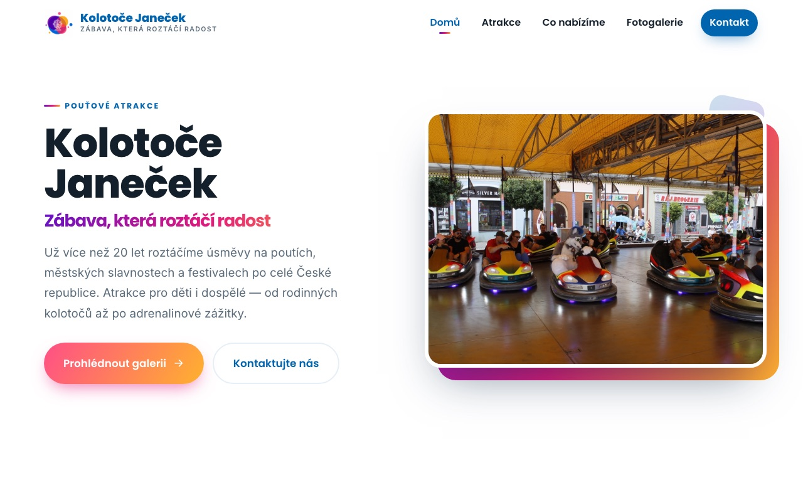
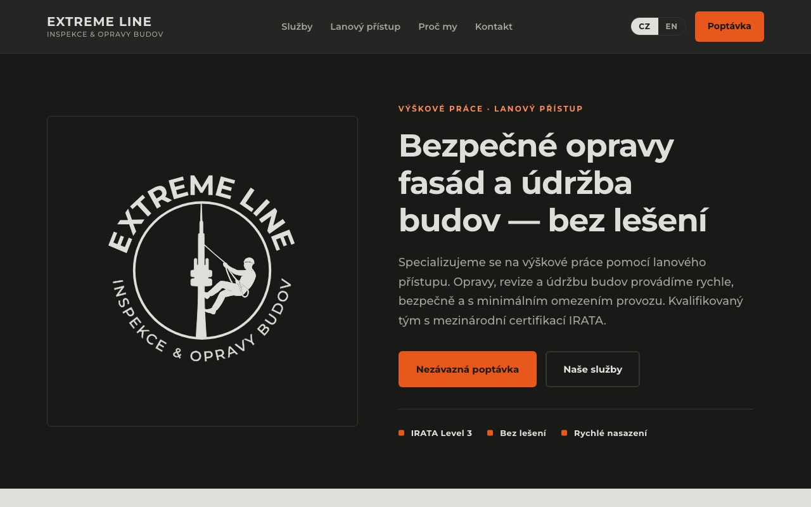
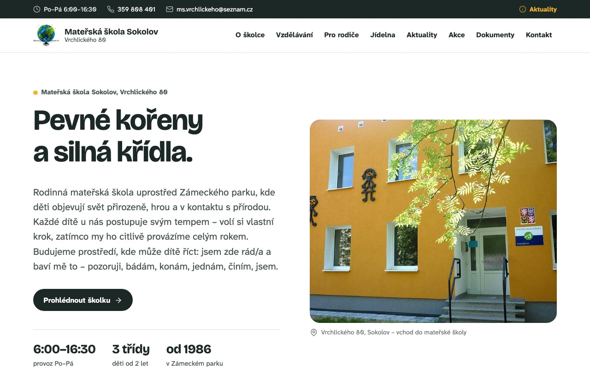
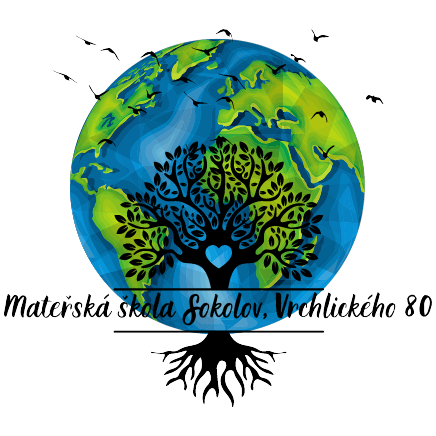
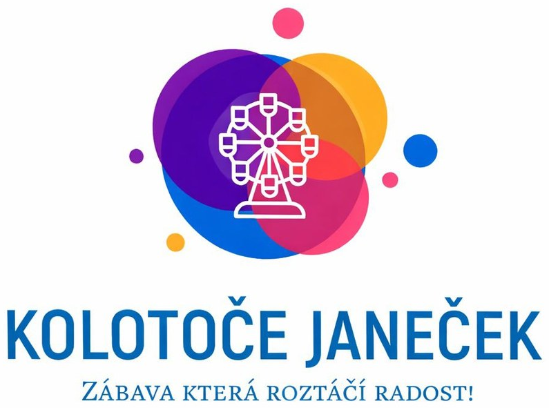
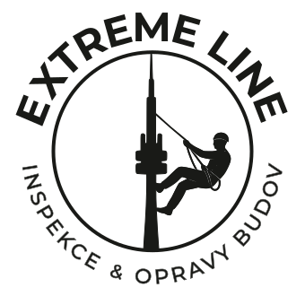
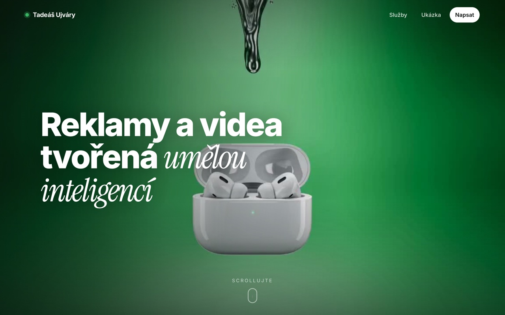
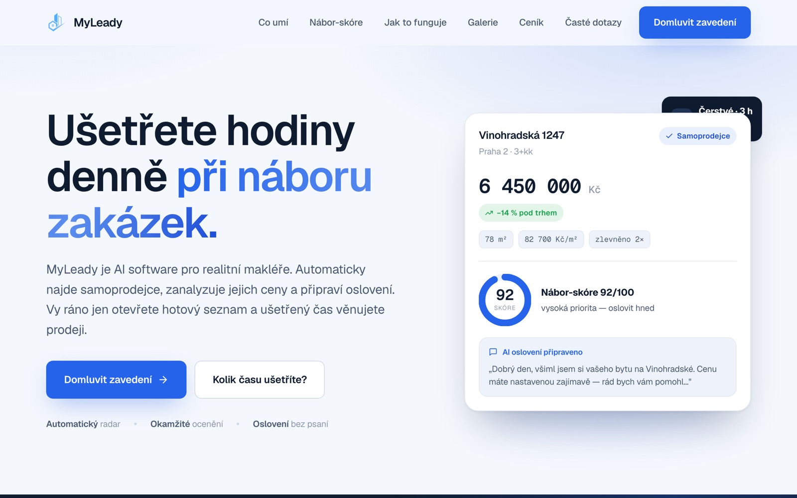
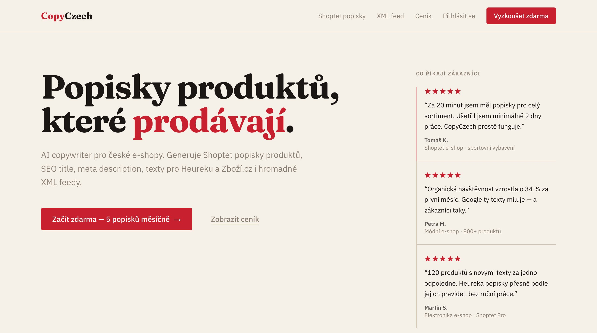

Weby na míru
Firemní prezentace, landing page i web s vlastní administrací.
Jsem Tadeáš — vývojář a designér z Karlovarského kraje. Návrh, kód i nasazení dělám sám.



Vývojář a designér z Karlovarského kraje. Web navrhnu, naprogramuju i nasadím — od nápadu po běžící doménu jsou to jedny ruce. Bez šablon, od nuly.
Firemní prezentace, landing page i web s vlastní administrací.
Typografie, kontrast a hierarchie dřív než efekty.
E-maily, CRM i AI propojené přes n8n do workflow, které běží samo.

Web mateřské školy
ŽivěFiremní web
ŽivěČtyřjazyčný web + administrace
Živě
Katalog pouťových atrakcí
Živě
Dvojjazyčný web, výškové práce
ŽivěProdejní web s administrací
ŽivěReklamní spoty a produktové fotky tvořené AI — z jedné fotky produktu hotové video, bez štábu a ateliéru.

Tohle nejsou zakázky, ale věci, které stavím sám pro sebe — prostor, kde si techniku osahám v ostrém provozu, ne jen v tutoriálu.

Radar zakázek pro realitní makléře. Hlídá samoprodejce, ocení nemovitost vůči trhu a připraví oslovení — makléř má lead dřív než konkurence.

AI copywriter pro české e-shopy. Generuje prodejní popisky produktů, SEO texty i hromadné XML feedy pro Heureku a Zboží.cz.
Ozvěte se na e-mail nebo telefon. Kód, který za projekty stojí, najdete na GitHubu.